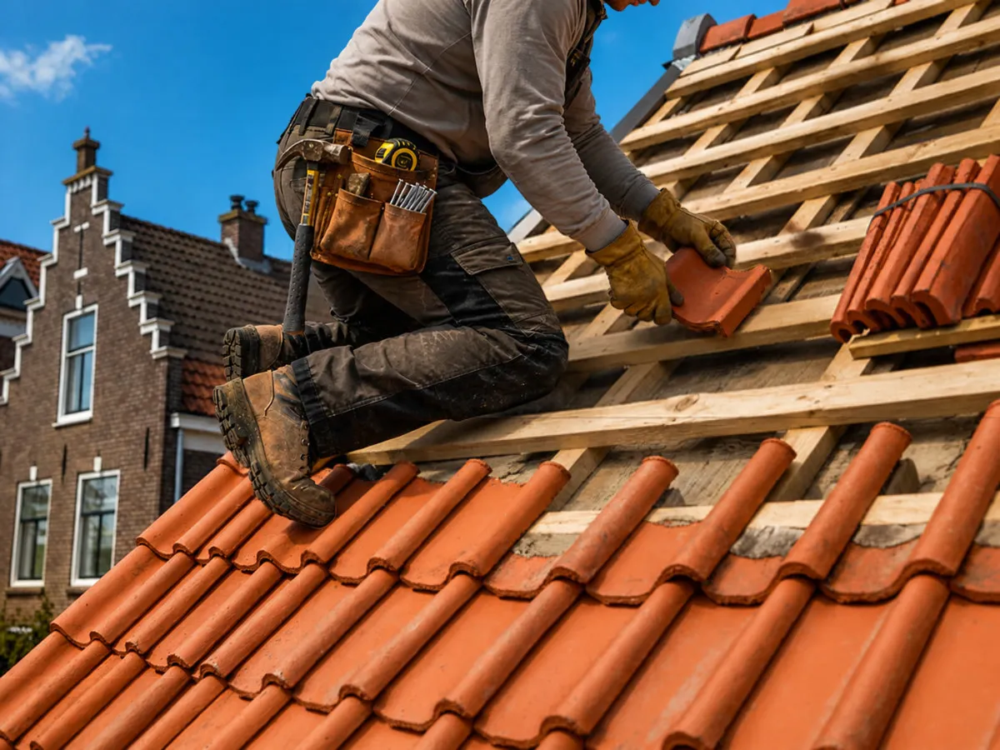

Dakdekker in Nijmegen: wie bel je waarvoor?
Bijgewerkt op 23 november 2026.
Een dakdekker bel je meestal pas als het misgaat: na een storm, of als er een vlek op het plafond verschijnt. Dan wil je snel iemand die het goed doet. Maar een plat dak, een pannendak, zink of riet vragen elk om een ander vak. Daarom zetten we de dakdekkers per klus op een rij.

Zo hebben we gekozen
We lazen in november 2026 de websites van de dakdekkers in onze bedrijvengids. We kozen bedrijven die laten zien wat ze doen en welke garantie je krijgt.
Pas op voor sites die beweren dat ze in Nijmegen zitten, maar alleen je aanvraag doorverkopen. Vraag altijd waar het bedrijf zit en wie er echt komt.
Een lekkage of stormschade
Dakdekkersbedrijf DSN: gratis dakinspectie
DSN doet daklekkages, reparaties, onderhoud, isolatie en nieuwe daken, plat en schuin. Bij spoed kun je ze dag en nacht bellen.
Ze komen eerst gratis je dak bekijken en geven tien jaar garantie op hun werk.
Goed voor: een lekkage die snel gemaakt moet worden.
Dakonderhoud van Empel: met foto's van je dak
Van Empel bekijkt je dak gratis met een camera of drone. Je krijgt daarna een rapport met foto's, zodat je zelf ziet wat er mis is.
Bij spoed zijn ze er binnen 24 uur, ook in het weekend. Op Google geven klanten ze gemiddeld een 4,7 uit 5.
Goed voor: wie eerst wil zien wat er aan de hand is.
EHBD: kleine lekkage voor 150 euro
EHBD staat voor Eerste Hulp Bij Dakproblemen. Een kleine daklekkage maken ze voor een vaste prijs van 150 euro, alles inbegrepen. Vraag wel naar de voorwaarden.
Ook voor reparaties, onderhoud en zink- en loodwerk kun je ze bellen.
Goed voor: een klein lek waar je geen grote rekening voor wilt.
Een plat dak, EPDM of zink
DZW Dak- en Zinkwerken: sinds 2001
DZW uit Nijmegen legt al sinds 2001 platte en licht hellende daken. Ze werken met bitumen, kunststof, rubber (EPDM) en zink, en doen ook dakgoten en regenpijpen.
Je krijgt tien jaar garantie op het werk, en vijftien jaar op een kunststof dak.
Goed voor: een plat dak op een huis, garage of uitbouw.
Een oud huis, lei of riet
Engelaar & Engelaar: vier generaties dakdekkers
Engelaar & Engelaar werkt al sinds 1890 aan daken in Nijmegen. Ze zijn sterk in ambachtelijk lei-, zink- en koperwerk, ook op monumenten. Daarnaast doen ze dakkapellen, dakgoten, dakramen en groene daken.
Op hun werk krijg je tien jaar garantie.
Goed voor: een oud huis of een monument.
Rietdekkersbedrijf Andras: voor een rieten kap
Andras legt nieuwe rieten daken en doet onderhoud en renovatie van oude. Een rieten dak vraagt om een eigen vak, en daar is Andras in gespecialiseerd.
Goed voor: een boerderij of villa met een rieten dak.
Een heel nieuw dak
NextRoof: vaste prijs vooraf
NextRoof doet van een lekkage tot een compleet nieuw dak, met pannen of plat. Je krijgt vooraf een duidelijke prijs, zodat je niet voor verrassingen staat.
Op een complete dakrenovatie geven ze vijftien jaar garantie.
Goed voor: wie zijn dak helemaal wil laten vernieuwen.
Meer dakdekkers
- Dubbeld Dakwerken in Dukenburg.
- Hermsen Dakbedekkingen en Theo Bouten.
- Niesta Dakwerken en Hendriks Dakbedekkingen.
Lekt er water uit een leiding of zit de afvoer verstopt? Dan heb je een loodgieter nodig. Kijk in onze gids voor loodgieters in Nijmegen.
Veelgestelde vragen
Wat kost een dakdekker in Nijmegen?
Dat hangt af van de klus. EHBD maakt een kleine daklekkage voor 150 euro alles in. Voor een nieuw dak vraag je een offerte. DSN, Van Empel en DZW komen je dak gratis bekijken.
Welke dakdekker komt bij spoed?
Dakdekkersbedrijf DSN en Dakonderhoud van Empel zeggen dat ze bij spoed snel komen, ook buiten kantoortijd.
Hoe lang gaat een plat dak mee?
Een bitumen dak gaat meestal 20 tot 25 jaar mee, EPDM en kunststof vaak langer. Laat het dak elk jaar even nakijken en houd de afvoer schoon.
Wie betaalt stormschade aan mijn dak?
Meestal je opstalverzekering, als je huiseigenaar bent. Huur je, dan is de verhuurder verantwoordelijk. Maak foto's van de schade voordat de dakdekker komt.